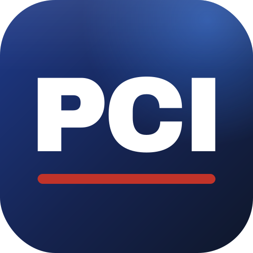

CERTUVO
Still here
Reading the same page. For the third time.
Everyone who ever earned those letters did exactly this.
The difference
Here's the thing nobody tells you.
The ones who pass and the ones
who keep re-sitting
aren't divided by effort.
They all work hard.
Ten credentials


PMP®
Project Management Professional
PCL-AI
Project Controls Leader
PML-AI
Project Management Leader
PFL-AI
Project Finance Leader
Ten credentials. One platform.
Official training partner
×

Certuvo is the official training partner of PCI AI
The Project Controls Institute — PCL-AI, PML-AI and PFL-AI
Already inside every course
Verified questionsevery one checked before a student sees it
Thousands already in the bank
01
Mock examsFull-length, under real timing02
Video lecturesEvery domain, taught end to end03
Course notesThe ones you'll actually keep
ResearchedMapped to the blueprintIn the exam's own weightings
AI Question Forge
Unlimited new questions. Four AI judges.
Writing…
Approved
1
Generatedthe question, four options and the explanation
2
Answer verifiedre-solved independently
3
Checked for ambiguityanything unclear is rejected
4
Matched to the blueprintthe exam's current weighting
AI Coach
Question 14 of 40 · Cost management23:07
A company applies fixed manufacturing overhead using a rate based on budgeted
production of 60,000 units. Budgeted fixed overhead is $480,000. Actual production
was 54,000 units.
Under absorption costing, what is the fixed overhead volume variance?
A$48,000 favourable
B$48,000 unfavourable
C$54,000 unfavourable
DNil — no volume variance arises
Reading your screen
AI CoachConnecting…
I can see it — $480,000 over 60,000 budgeted units.
Do I use budgeted units or actual?
Before I answer: the rate is set once, in advance. Which of the two numbers was known then?
Six languages · English · العربية · Français · Español · हिन्दी · Русский
Study with a peer
Amara is sharing her screen
Live
Question 14 of 40 · Cost managementShared
Budgeted fixed overhead $480,000 over 60,000 units. Actual production 54,000 units. What is the fixed overhead volume variance?
A$48,000 favourable
B$48,000 unfavourable
Amara
Jonas
AK
Amarapresenting
JD
Jonasspeaking
+
Bring a friendsend them a link
Screen share · both cursors live
Readiness
Readiness over timeillustrative
Exam-ready
Planning & budgeting
Performance
Cost management
Internal controls
Technology & analytics
the gap you keep falling into
The question isn't how much you've read.
It's whether you're ready.
It's whether you're ready.
The price
Less than the market asks.
And if you're new — start free.
certuvo.com
CERTUVO
The difference
It was never how hard you work.
It's what you work with.
Ten credentials. One platform. That's enough.
certuvo.com
Your exam partner
Official training partner of PCI AI
Official training partner of PCI AI
01 / 11
Late
One platform. That's enough.
certuvo.com
Ten credentials. One platform.
That's enough.
certuvo.com
All third-party names and marks shown are the property of their respective owners. Certuvo is an independent preparation provider and is not affiliated with, sponsored by or endorsed by any of them, except PCI AI, whose official training partner it is. Preparation does not guarantee a pass.